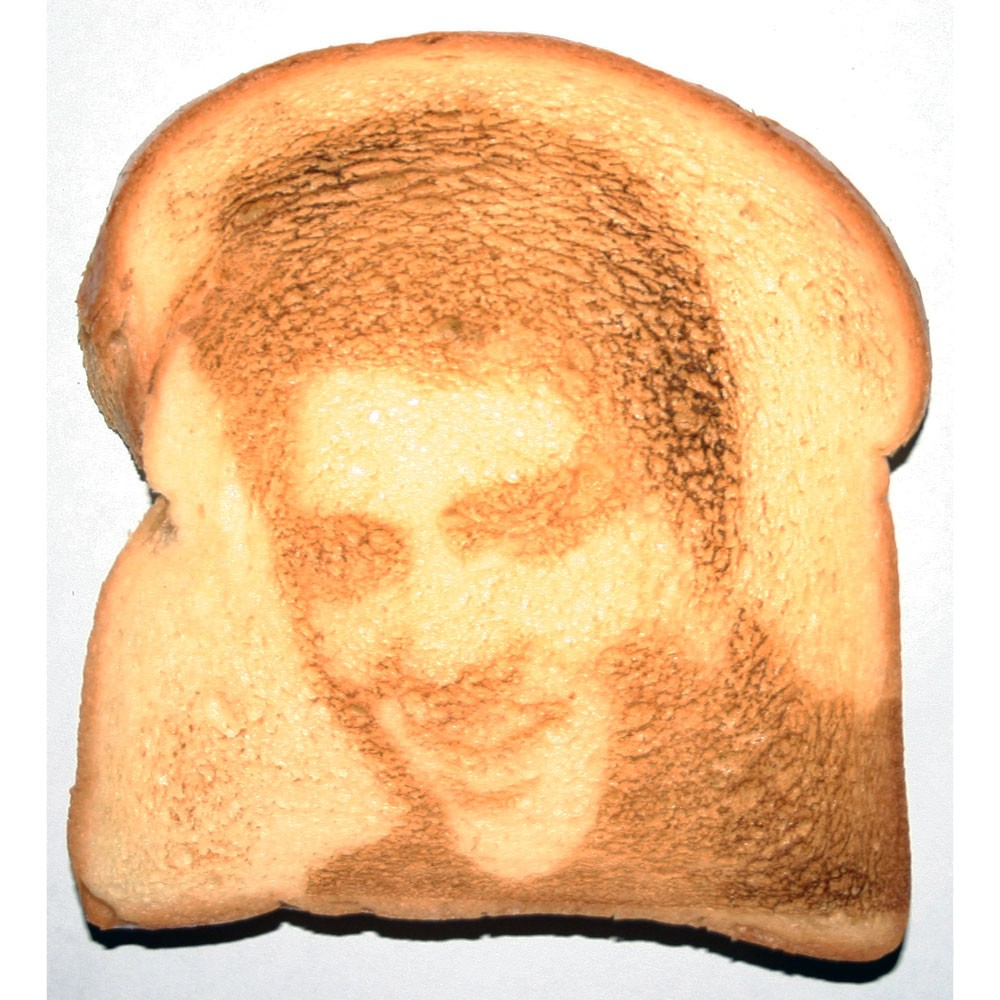

Toast! How to put bread in a toaster and make it toasty.

Description
Toast is an ancient but relatively unknown delicacy only found in
the most hidden of circles. Now the secret will be yours!
Wikipedia History Toast
Ingredients
- bread
- butter
- optional: peanut butter
- optional: jam
- optional: cheese (preferably not with the above options)
- mental fortitude
- the ability to persist in the face of adversity
- hunger (for knowledge and/or food)
Directions
-
The quest for fire is one of mankind's greatest struggles. Fire is warmth, safety, security, and a way to make toast.
The struggle is real. You must be prepared to bang two stones together to create sparks or rub two sticks together until
a magical force causes smoke to appear. Alternatively, one may light a match or in extreme situations where one is
lucky beyond all possible hope, one may actually have a toaster.
-
Place bread in browning implement (i.e. toaster). Or if one has created fire, one should put bread on stick and hold near
the fire (near enough to begin to brown but not to catch fire. This is tricky!)
-
The magical process known as toasting baffles science. For some reason the bread begins to become crisp, brown and warm.
When the bread appears to become a lightly crisped surface, toasting has occurred. Toast to desired appearance and remove
from heat. Note: If bread catches fire or you do, please move bread or yourself away from the fire. Stop, drop and roll.
-
Give praise to the gods and/or the magic of the universe for granting your bread the ability to transform so miraculously.
-
While the toast is warm, spread butter over the surface. Magically, the butter will melt. This alchemy is also inexplicable.
-
Add optional ingredients.
-
Partake.
-
Note: Image of Elvis may not appear everytime. Often other holy figures may appear instead.